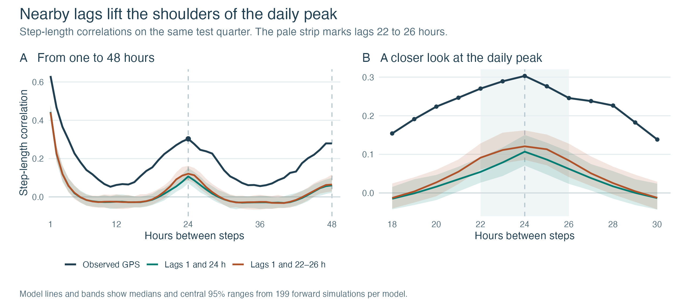
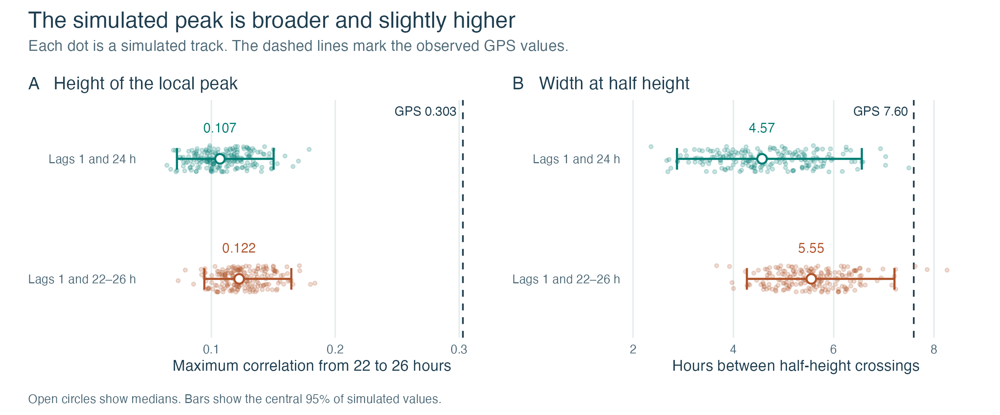
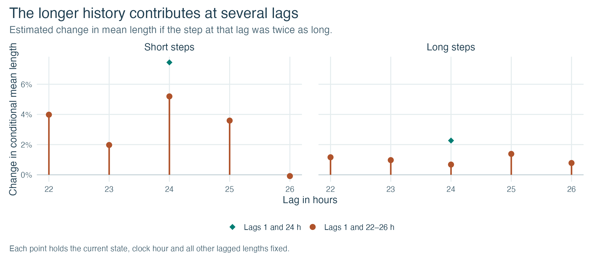

Do nearby lags make the daily peak wider?
Salif Keita’s hourly GPS track · same test quarter
Source:vignettes/articles/elephant-lag-window.Rmd
elephant-lag-window.RmdThe correlation around 24 hours
The reference model uses the lengths one and 24 hours earlier. The new model keeps the one-hour lag and estimates five additional coefficients per state, one for each lag from 22 to 26 hours. Both models retain the daily curves for state transitions and mean step lengths. We refitted both on the first 16,434 steps and used the same 5,478 test steps as before. Wall et al. (2014), GPS archive

At 24 hours, the simulated median rises from 0.107 to 0.121, compared with 0.303 in the GPS data. Across the four neighbouring lags (22, 23, 25 and 26 hours), the median average correlation rises from 0.069 to 0.100. The observed average is 0.270.
Height and width
For each observed or simulated curve, we locate the highest correlation between 22 and 26 hours. The width is the distance between the closest half-height crossings on either side of that point, interpolated between whole hours. We measure half-height above the higher of the two shoulder correlations at 18 and 30 hours. A curve whose peak is at or below that baseline has no defined width.

The median width increases from 4.57 to 5.55 hours. The observed width is 7.60 hours. A width could be measured in 199 of 199 simulations for the reference model and 199 of 199 for the extended model.
| Quantity | Observed | Lags 1 and 24 h | Lags 1 and 22–26 h |
|---|---|---|---|
| Correlation at 1 hour | 0.631 | 0.443 | 0.441 |
| Correlation at 24 hours | 0.303 | 0.107 | 0.121 |
| Local peak height | 0.303 | 0.107 | 0.122 |
| Width at half height (hours) | 7.60 | 4.57 | 5.55 |
| 24-hour correlation after hourly centring | 0.249 | 0.050 | 0.067 |
| Test log predictive density per step | 0.0648 | 0.0683 |
Hourly centring subtracts the mean length for each clock hour separately in the observed track and in each simulation. The test log score predicts each step from the available observed history. Forward simulations use their own generated lengths.
The lag effects within each state

Each lag uses only past lengths within the same uninterrupted segment. The sum of the absolute lag coefficients is below one in each state. The two models were fitted from multiple starts and selected by training likelihood after numerical and state checks. All 8 accepted starts of the extended model reached the same likelihood solution to the reporting precision. This is a repeated benchmark on one track. Stoye, Hoyer and Langrock (2025), higher-order autoregression in movement models
Reproduce the comparison
The analysis script keeps each test segment’s starting hour, heading, position and length. Download the script and summary tables from the repository. The GPS archive is available from Movebank. Analysis script · Tables
install.packages("remotes")
remotes::install_github("AurelienNicosiaULaval/behavSSF", ref = "v0.1.0.9003")
if (!file.exists("elephant.csv")) {
download.file(paste0("https://datarepository.movebank.org/server/api/core/bitstreams/",
"77e38af2-b5fc-4c10-9e6d-f36b2adf9ea9/content"), "elephant.csv", mode = "wb")
}
stopifnot(system2(file.path(R.home("bin"), "Rscript"),
c("--vanilla", "elephant-lag-window.R", "elephant.csv", "results")) == 0)